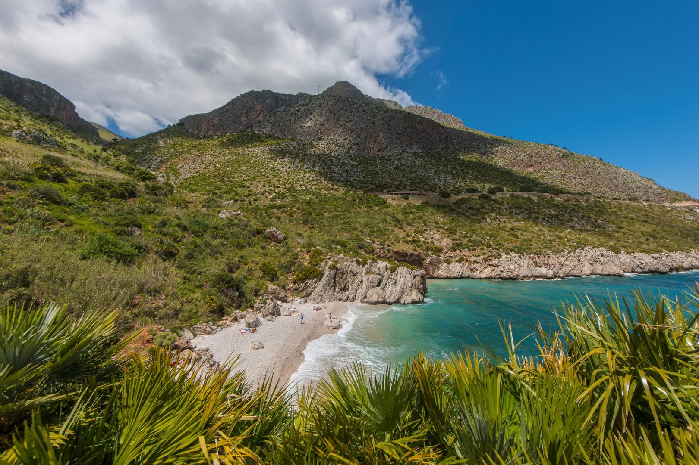
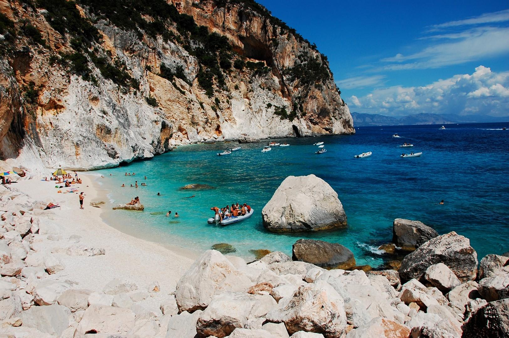
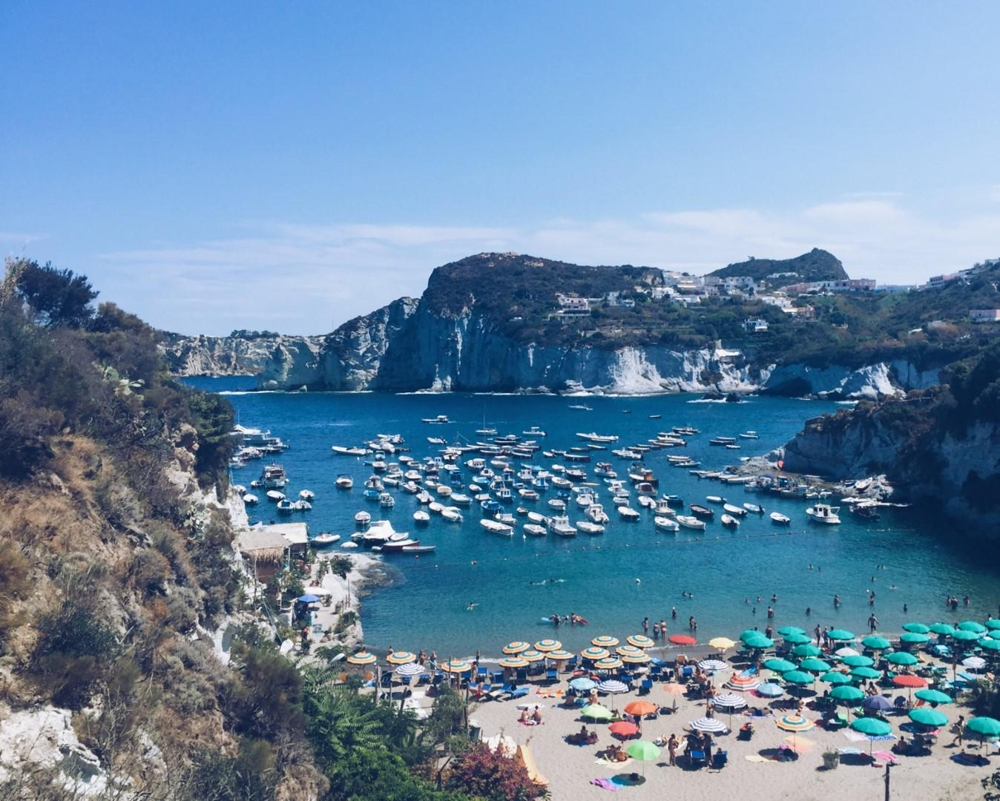

Spiagge
Da nord a sud, dalla Liguria alle isole: tantissime e splendide sono le spiagge italiane. Da quelle con i dolci fondali che digradano, perfette per una vacanza al mare con i bambini, a quelle selvagge perfette per rilassarsi lontano dalla folla, fino alle spiagge che fanno parte di magnifiche riserve naturali. Ecco le più belle.
Tonnarella dell’Uzzo, Riserva Naturale dello Zingaro (Trapani) / Sicilia
Greci e Latini la chiamarono "Cetaria" per la grande quantità di tonni nel suo mare dalle acque cristalline. E’ la meravigliosa Riserva Naturale dello Zingaro, quel tratto di costa siciliano che per 7 km si estende da San Vito lo Capo a Castellammare del Golfo. Un tripudio di piante e fiori per una natura incontaminata abitata da animali selvaggi e affacciata sul blu del mare della Sicilia. Una delle sue cale più spettacolari, leggendarie e affollate per via della sua bellezza è Tonnarella dell’Uzzo: la spiaggia bianca si raggiunge in soli 15 minuti di auto da San Vito e una volta arrivati alla biglietteria della riserva si scende a mare con pochi passi a piedi. L'entrata è a pagamento.
Cala dei Gabbiani, Costa di Baunei (Ogliastra) / Sardegna
La sarda Cala dei Gabbiani è ancora poco conosciuta, oscurata dalla fama della vicina Cala Mariolu, eppure non è altro che il suo naturale proseguo verso sud. Ecco che allora, anche in questo tratto di spiaggia, si ritrovano le stesse incredibili caratteristiche: un'acqua cristallina sfumata di verde e di blu, una scogliera levigata dal tempo e un lido di sassolini bianchi. Il suo nome deriva dalla presenza dei gabbiani, che all’imbrunire vi trovano rifugio per poi lasciarla libera durante le ore di pesca diurne. Cala Gabbiani si trova in Ogliastra e si raggiunge in due modi: via mare con imbarcazioni private o con i natanti che ogni giorno partono dal Golfo di Orosei, dai porti di Cala Gonone, Arbatax e S. Maria Navarrese, oppure a piedi percorrendo un impegnativo sentiero di trekking.
Cala Feola, Ponza (Latina) / Lazio
Meglio essere preparati alla gran folla quotidiana (soprattutto ad agosto) ma, una volta assicurato il proprio piccolo fazzoletto di sabbia, se ne vedranno delle belle, a partire dalle meravigliose piscine naturali che si trovano nei suoi dintorni. Stiamo parlando di Cala Feola, il fortunato lido di Ponza, un'isola gioiello a due passi da Roma. La caletta, situata in località Le Forna, è raggiungibile sia a piedi (se si soggiorna all'altezza di Le Forna Chiesa, percorrendo un sentiero di circa 15 minuti), sia in barca, sia con l'auto. L'isola mette a disposizione un servizio navetta, ma ovviamente ci si deve fare spazio anche sul mezzo pubblico e, una volta arrivati, scendere delle scalette per poi godere del suo mare limpido e della sua sabbia bianca. Grazie al suo dolce fondale, è l'ideale per i bambini.
La pagina originale è consultabile qui